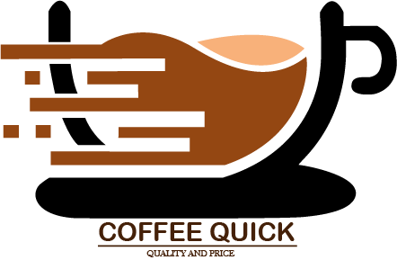

Este producto es uno de los más vendidos por la marca. Acompaña a cada cliente en las mañanas frías de la capital por su sabor y aroma de ser colombaino. Obtenido a partir de los granos tostados y molidos de los frutos de la planta del café.
Una comida tipica colombia, estas empanas están rellenas con una preparación casera ya sea salada o dulce y frita. El relleno puede incluir carnes rojas o blancas, verduras. Por supuesto acompañadas con ají preparado por la casa.
Uno de los alimentos más tradicionales en el país de origen precolombino, hecho a base de masa de maíz seco molido o de harina de maíz precocida, de forma circular y aplanada. Acompañada de queso y chocolate, uno de los desayunos más preferidos de la región.
Productos industrailes de paquete como; papas, yucas, ponques, nachos, plátanos, chicharones,golosinas. También contamos con bebidas como; gaseosa, jugos, té, agua.
En está revista se puede evidenciar los procesos gráficos realizados a la marca, los programas a usar como adobe photoshop, illustrator que sirvieron para la contrucción digital de la revista y el manual de marca. Tambien conocemos un poco el código usado del editor de texto.
Leer revista